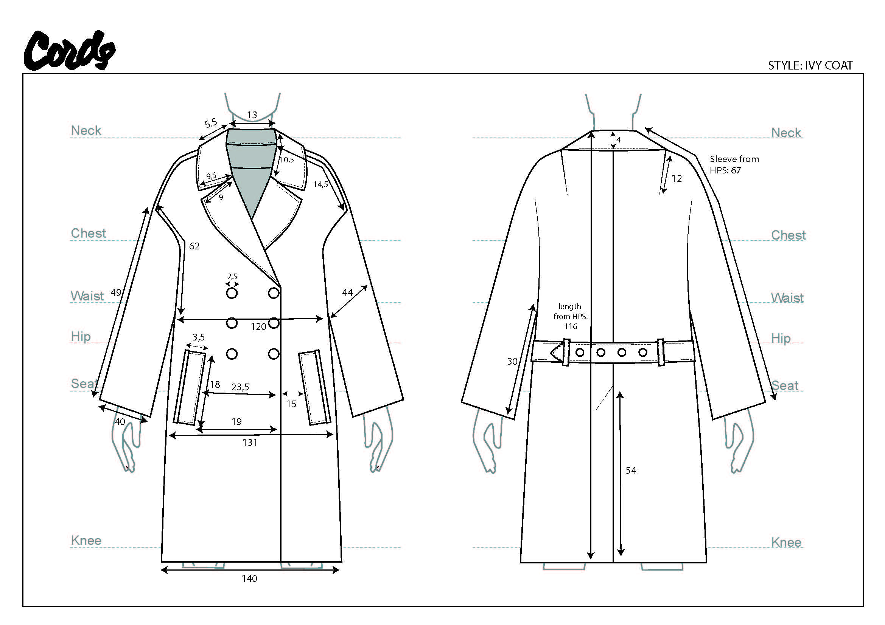
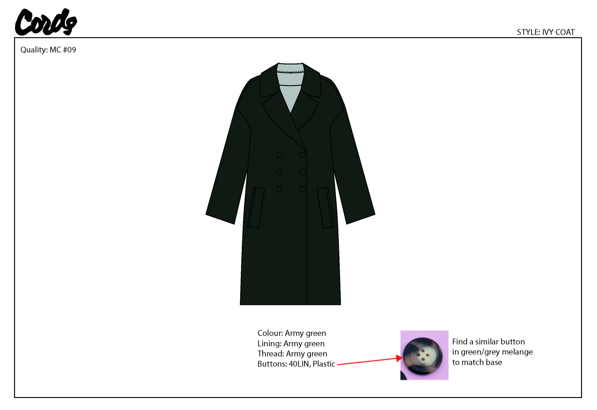
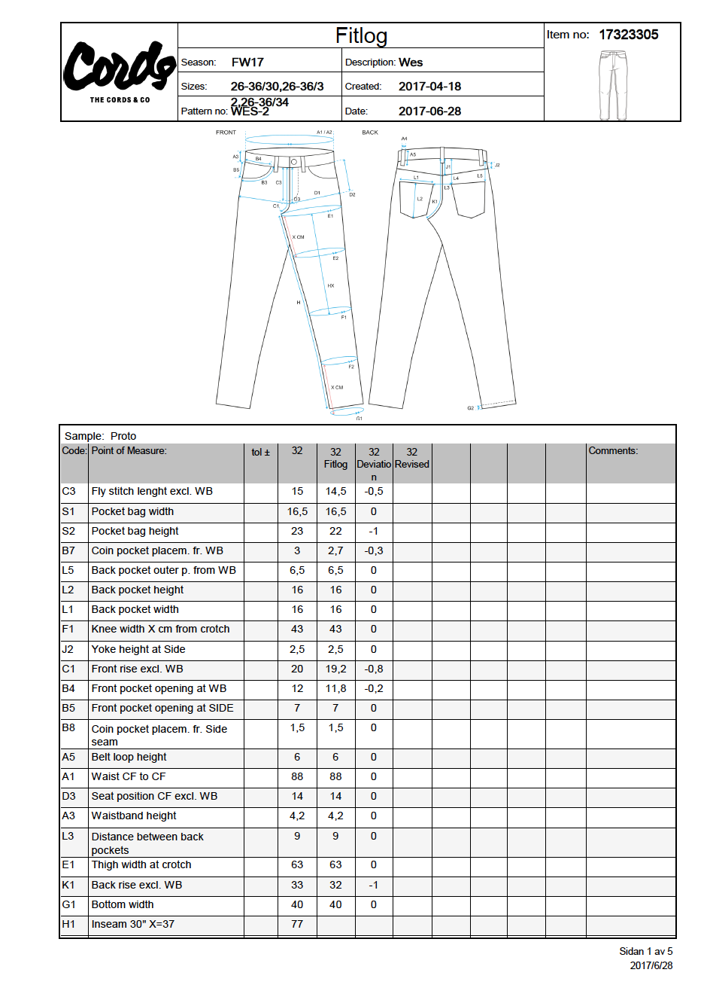
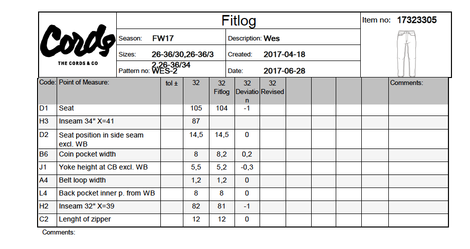
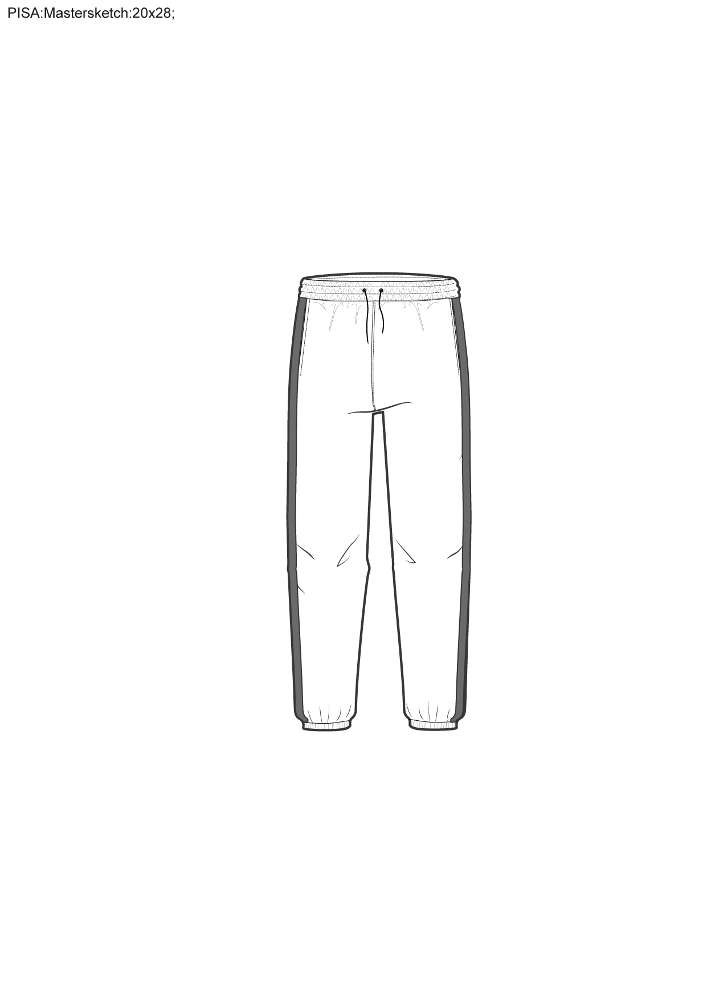
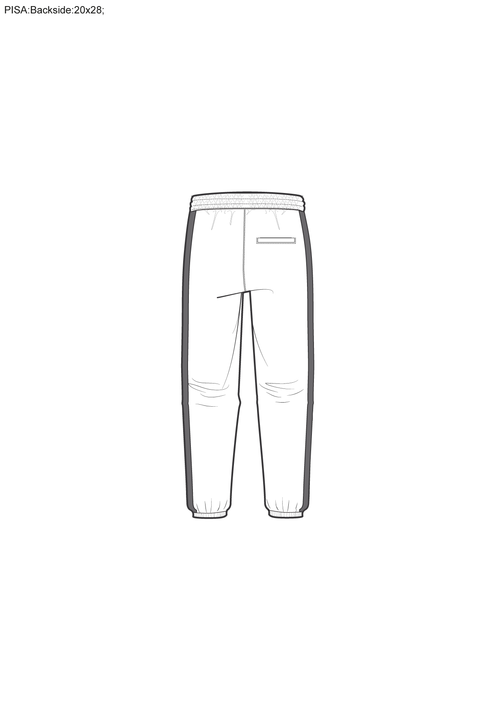
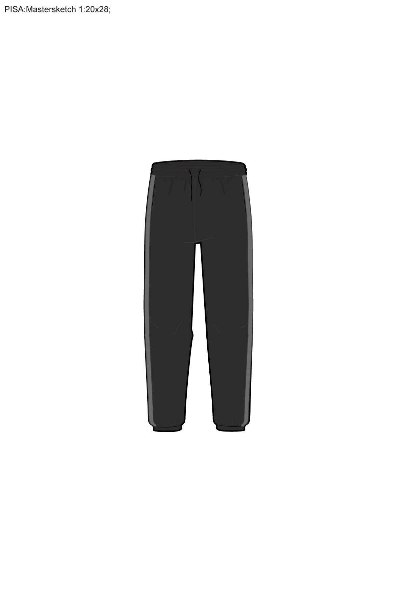
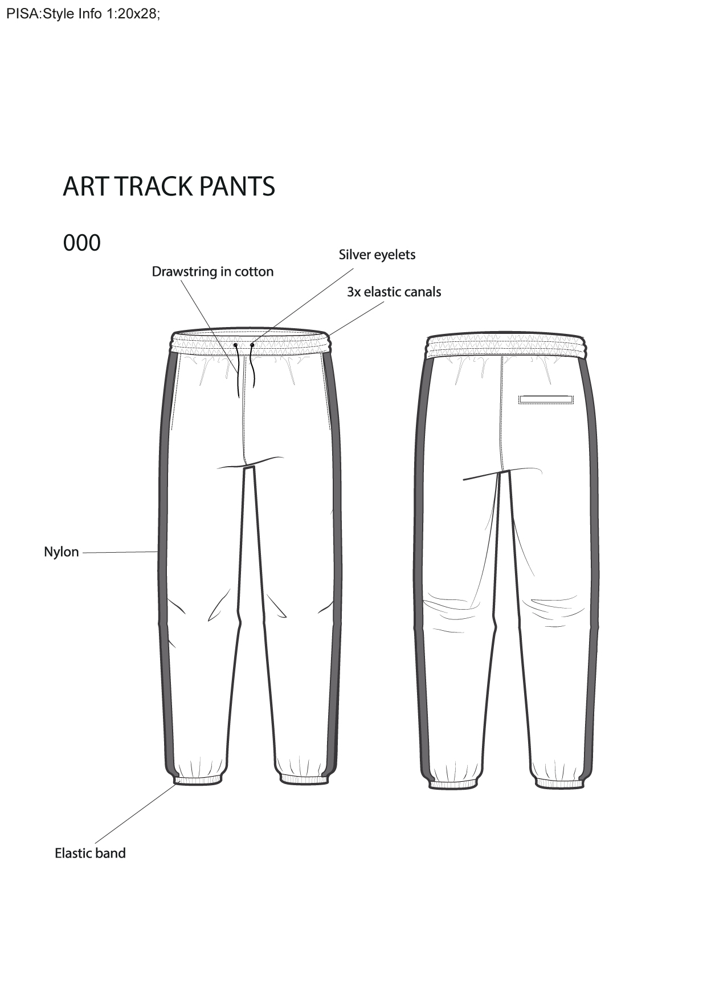

BACK
THE CORDS AND CO
SUMMER 2017
Here you can find some work that I created as an intern for the Development and Production team as well as the designers at The Cords and Co in Stockholm. I mostly worked with technical aspects of the creation of the collection.







